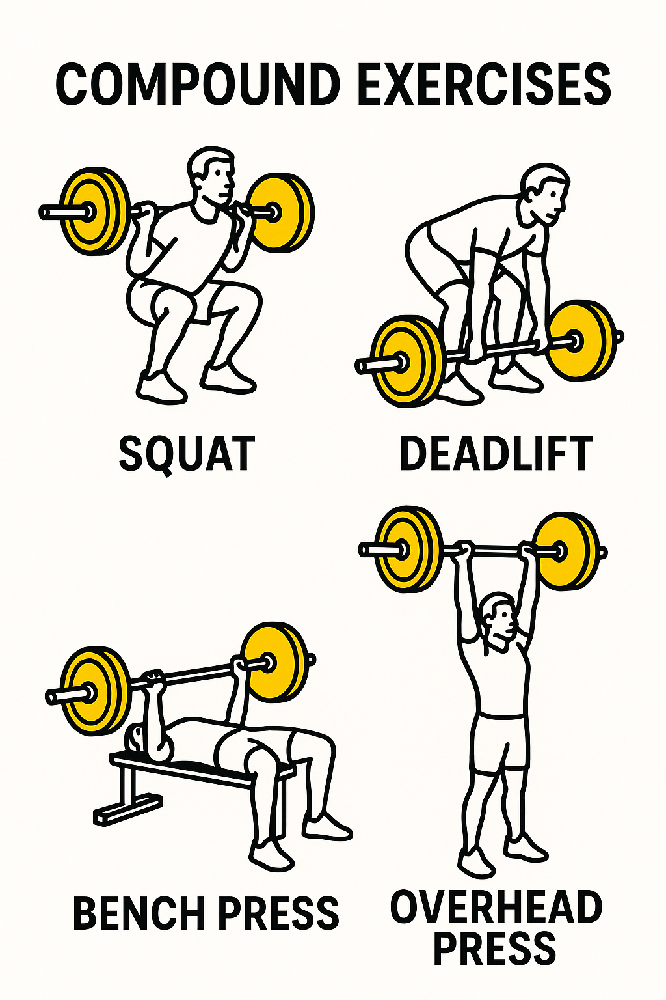
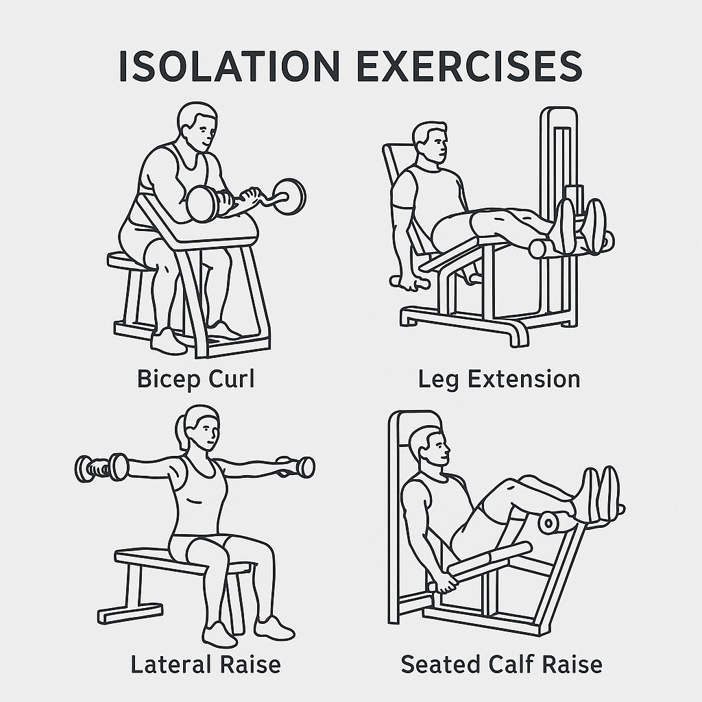

Honestly no one really cover this, but I believe this is one of the most crucial thing that all beginner should understand. No one will look down on you if you look like you have no clue what you are doing, people are minding their own business no one will mock you so don't let that stop you from going to the gym. Ask for help and you might find some great advice and a potential gym buddy. HOWEVER, if your gym etiquette sucks people will literally watch you die on the bench(At least I will).
UNRACK YOUR WEIGHTS AFTER YOU ARE DONE!!! I don't care if you can squat or bench 1000 pounds, unrack your weight. Sure, for machines you can leave a plate on but for free weight bars unload everything. If you need help, go ask the 60 year old janitor lady for help.
Clean the equipment after you are done with it. No one wants to touch your sweat so go grab a paper towel, wet it and mop the thing. I would also suggest you do wipe the equipment before you use it, since you never know who used it before and they might have some skin condition.
If someone ask you for a spot on the bench. DO NOT TOUCH THE BAR unless the bar is going down(during which they are trying to push the weight up), even if they stall for 3 seconds as long as it is not going down you do not touch it
If you are taking a break between sets, don't go braindead scrolling TikTok forever when there is a line waiting. I am not suggesting that you jump into your next set when you are huffing and puffing. For compound movements you can take as long as you need to recover. For isolates such as machines, keep them between 1-2 minues max.
Don't take all the weights. This happens mostly for dumbbells, you don't need to do supersets as a beginner. Basically, don't take 4 different weights and hover forever you most likely just need 2 different weight max.
As you might have noticed, I have been emphasizing isolate movements and compound movements repeatedly. What are they?
Compound movements refers to movements that require more than one muscle group to be engaged during a workout. Common compound movements are squat, bench press, deadlift and overhead press. No doubt that other movements such as a machine bench press or a lat pull down machine also utilize other muscle groups other than the main muscle. However, compound movements often engage the whole body during a workout session. For example, bench press seems like an isolate movement since you are only pushing the weight up with your chest right? Wrong! The bench press incorporates your chest, tricep, bicep, lats, abs, shoulders, traps and your legs. If you are only using your chest for bench, you will have a very hard time gaining strength from it and potentially increase chance of injuries. Since compound movements workout multiple muscle groups at a time, I would strongly advocate beginners to practice them, maybe you need to use machines to gain some basic strength, but the compound movements would lead you to your dream physique faster.
Isolate movements are often done on machines as opposed to free bar like the compound movements. The point of isolate movements is to target specific muscle group and avoid other muscle taking over. For example, the preacher curl and leg extension machines. At this point you might wonder, if compound movements basically covers all muscle group, why should we bother with isolate movements then? I was thinking of the same thing during my novice phase. I was doing only SBD until I got injured. I was repping 300lb squats but my biceps were too weak to handle them. Isolate movements are crucial once you step into the intermediate phase. As your big muscle groups are pretty developed but some muscle groups might be lacking which will drag you behind from progressing further. I would not advice beginner to have majority of their workouts to be isolate movements, I have done it myself and barely see any gains. Use isolate movements to gain some basic strength and then hop on compound movements.
